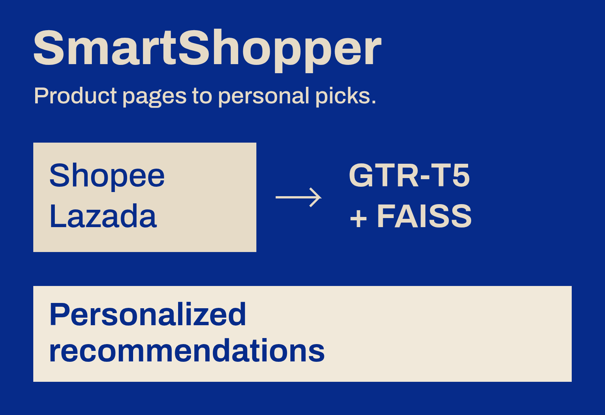
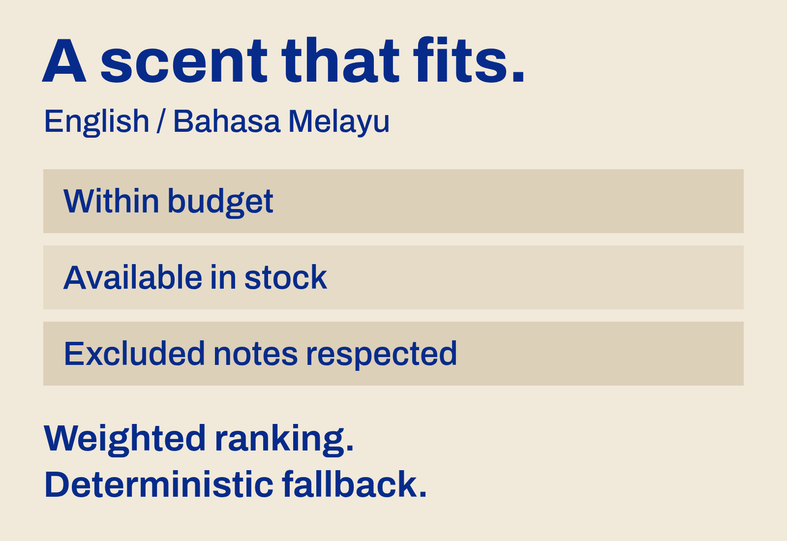
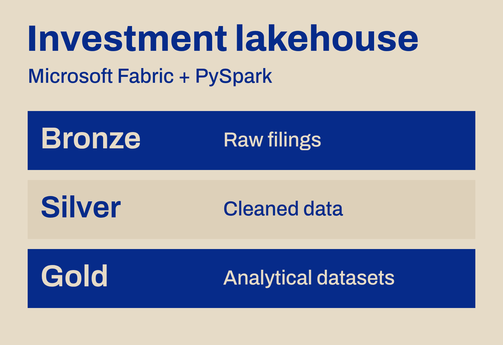
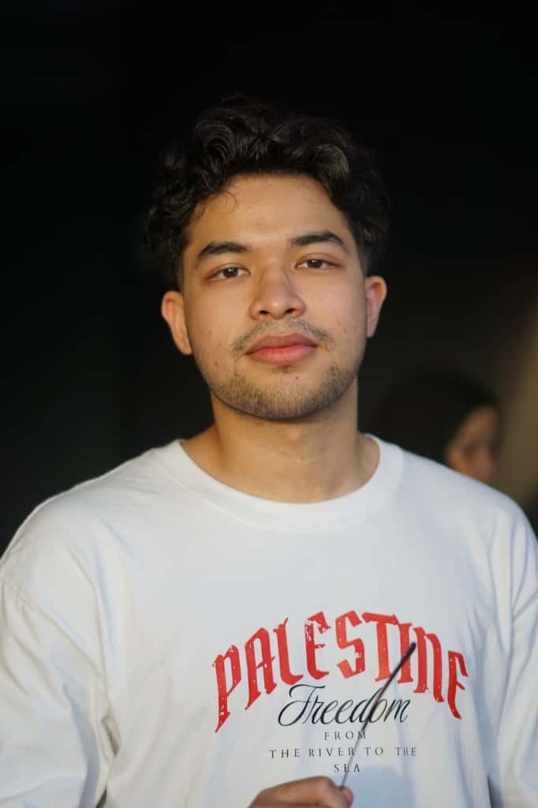

SYED ABDULRAHMAN
AI & data engineer building pipelines and recommendation systems.
Former intern at Khazanah Nasional Berhad.
Computer Science graduate, IIUM.
Selected work
Enterprise pipelines, applied AI, and products built end to end.
6 projects
SmartShopper
AI-powered personal shopper
ViewCloseToggle SmartShopper details
SmartShopper
AI-powered personal shopper

2nd Place, Best Commercialization
A Chrome extension that recommends products directly on Shopee and Lazada product pages.
- Built the FastAPI and MongoDB backend, using GTR-T5 embeddings and FAISS for semantic recommendations.
- Added user profiling and daily personalized suggestions based on browsing behavior.
- Delivered the extension and recommendation backend as an integrated final year project.
Python, FastAPI, MongoDB, GTR-T5, FAISS, Chrome Extension
Fragrance platform
E-commerce & scent recommendations
ViewCloseToggle fragrance platform details
Fragrance platform
E-commerce & scent recommendations

17 integration tests & 24 browser cases
A perfume storefront and admin dashboard that connect personalized discovery with product, inventory, and order management.
- Built an English/Malay scent advisor with deterministic fallback and weighted ranking constrained by budget, stock, and excluded notes.
- Implemented authentication, PostgreSQL/Prisma models, inventory management, and transactional sandbox checkout.
- Added Neon and S3-compatible image storage with WebP processing. Verified workflows across multiple local test runs.
Next.js, React, TypeScript, Tailwind CSS, PostgreSQL, Prisma, Neon, Playwright
Investment lakehouse
Financial data engineering
ViewCloseToggle investment lakehouse details
Investment lakehouse
Financial data engineering

Automated investment research workflows
Python ingestion and PySpark processing that turn raw financial filings into structured datasets for downstream machine learning.
- Handled API back-off, retries, state checkpointing, and exceptions for corrupted symbols and delisted firms.
- Architected Bronze, Silver, and Gold layers in Microsoft Fabric to clean filings and structure analytical data.
- Supported investment research through automated report parsing and production lakehouse pipelines.
Python, PySpark, Microsoft Fabric, Medallion architecture
Financial NLP
Sentiment, risk clustering & LLM evaluation
ViewCloseToggle financial NLP details
Financial NLP
Sentiment, risk clustering & LLM evaluation
Making unstructured reports useful to investment research.
- Developed a corporate sentiment scoring pipeline using FinBERT and spaCy to turn reports into quantitative metrics.
- Applied HDBSCAN to text-embedding-3-large document embeddings to identify emerging financial risk clusters.
- Benchmarked LLMs for automated topic labeling to support analysts’ document review.
Python, FinBERT, spaCy, HDBSCAN, text-embedding-3-large, LLM benchmarking
Lung cancer classification
Hybrid machine learning ensemble
ViewCloseToggle lung cancer classification details
Lung cancer classification
Hybrid machine learning ensemble
94% classification accuracy in the project evaluation.
Built a hybrid Random Forest and XGBoost ensemble, with Genetic Algorithm and Particle Swarm Optimization for hyperparameter tuning. It achieved the highest classification accuracy among the models evaluated in this academic project.
Python, Scikit-learn, Random Forest, XGBoost, Genetic Algorithm, PSO
Supply chain analytics
Predictive & diagnostic analysis
ViewCloseToggle supply chain analytics details
Supply chain analytics
Predictive & diagnostic analysis
Understanding the factors behind profit and delivery risk.
Analyzed retail and logistics datasets with Pandas, NumPy, Seaborn, and Matplotlib. Developed Random Forest, Gradient Boosting, LightGBM, XGBoost, and SVM models to forecast order profit and identify operational inefficiencies.
Python, Pandas, NumPy, LightGBM, XGBoost, Scikit-learn, Seaborn, Matplotlib
Experience
Engineering for investment research.
Khazanah Nasional Berhad
AI & Data Engineering Intern
March – September 2026
Built data and NLP pipelines for investment research and document review.
- Resilient Python API ingestion with retries, checkpointing, and exception handling.
- Bronze, Silver, and Gold lakehouse architecture in Microsoft Fabric with PySpark.
- Corporate sentiment scoring with FinBERT and spaCy.
- Embedding-based financial risk clustering and LLM topic-labeling benchmarks.
A little about me

I’m Syed Abdul Rahman Al-Haddad, a Computer Science graduate from IIUM, focused on data science and computational intelligence.
I enjoy the work between a model and a useful product: preparing the data, building the backend, and making the whole system work together.
My experience spans investment research at Khazanah Nasional, an award-winning shopping assistant, and a full-stack fragrance recommendation platform.
Download my résumé PDF, 606 KBEducation
Bachelor of Computer Science
International Islamic University Malaysia
Data Science & Computational Intelligence
October 2022 – September 2026
CGPA 3.56 / 4.00. Dean’s List, 5 semesters.
Foundation
Engineering & Computer Science
Centre for Foundation Studies, IIUM
July 2021 – June 2022
CGPA 3.37 / 4.00
Tools I work with
Across data, models, and the application around them.
- Languages
- Python, SQL, TypeScript, JavaScript, R, Java, C++
- AI & machine learning
- Scikit-learn, TensorFlow, PyTorch, FinBERT, spaCy, HDBSCAN, FAISS, NLTK, OpenCV, Azure AI Foundry
- Data & analytics
- PySpark, Microsoft Fabric, Pandas, NumPy, Snowflake, BigQuery, Power BI, Tableau, Matplotlib, Seaborn
- Web & backend
- Next.js, React, Node.js, FastAPI, Tailwind CSS, Prisma, HTML, CSS
- Databases & cloud
- PostgreSQL, MongoDB, MySQL, vector databases, Neon, Oracle Cloud Infrastructure, Vercel
- Testing & development
- Docker, Playwright, Vitest, Git, GitHub, Linux/WSL, Jupyter, VS Code
Certifications
CompTIA Data+ 2025
Oracle Cloud Infrastructure
Generative AI Professional 2025
Recognition
From programming competitions to commercialization.
| Year | Competition or award | Result |
|---|---|---|
| 2026 | FYP ExhibitionAI-powered personal shopper | 2nd PlaceBest Commercialization |
| 2024 | Nationwide Top CodersCompetitive programming | Top 5 |
| 2024 | Top Coders IIUMUniversity competition | 2nd Place |
Beyond the code
I-Hax Innovation Hackathon
Deputy Director, 2024
Co-directed a nationwide event for 100+ participants, coordinating operations and securing RM 15,000+ in sponsorships.
ICT Student Society
Head Officer, Entrepreneurship, 2022–2023
Managed campus events, generated RM 9,000+ in profit, and coordinated hardware showcases at IIUM.
Get in touch
I’m looking for junior roles in AI engineering, data engineering, and data science.